The slide of the lecture is on the left, the same figure or table on the right, computed in the browser from the same data. The ▶ button moves the parameter step by step; the tables and worked examples are recomputed with it. Abbreviations: FMH (fractal market hypothesis), R/S (rescaled range), DFA (detrended fluctuation analysis), GPH (the Geweke–Porter-Hudak estimator), fBm (fractional Brownian motion), fGn (fractional Gaussian noise), ARFIMA (autoregressive fractionally integrated moving average), ACF (autocorrelation function), AR(1) (first-order autoregressive model), GARCH (generalised autoregressive conditional heteroskedasticity), OLS (ordinary least squares), SE (standard error), i.i.d. (independent and identically distributed), VaR (value at risk), TLV (Banca Transilvania), SNP (OMV Petrom).
Self-Similarity and Fractals · Hurst, the Nile and the R/S Statistic · Long Memory: Definitions and Models · Estimators of Long Memory · Spurious Long Memory · Long Memory in Volatility · Rolling Hurst Exponents · Long Memory and Risk
Self-Similarity and Fractals
Fractal Dimension
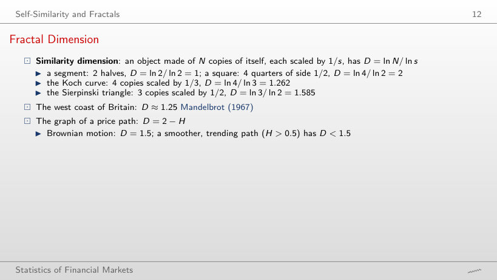
Worked example: box-counting dimension (extra computation)
Answer
About 1.5: the slope is 1.47 with ε from 1/2 to 1/128, close to D = 2 − H = 1.5. The path is a curve, but so rough that the number of boxes grows like ε^(−1.5), not like ε^(−1). For H = 0.1 the count gives only 1.74 instead of 1.9: with 1000 points the roughness below the time step is invisible, so D is underestimated for very rough paths.
The Scaling of h-Day Returns
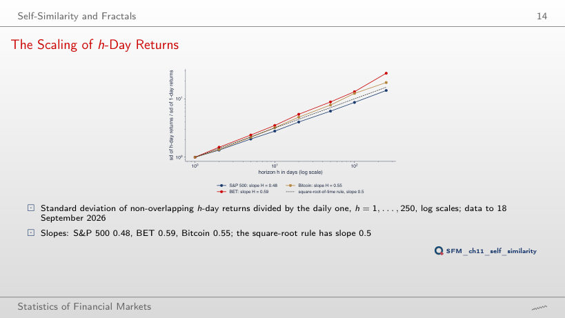
Answer
Below: 2.80. The daily S&P 500 returns have a negative first-order autocorrelation, −0.099, so consecutive days partly offset each other (mild mean reversion). The BET has 3.50, above √10 (positive autocorrelation), and Bitcoin 3.20, close to √10.
Hurst, the Nile and the R/S Statistic
Worked Example: R/S of Eight Returns
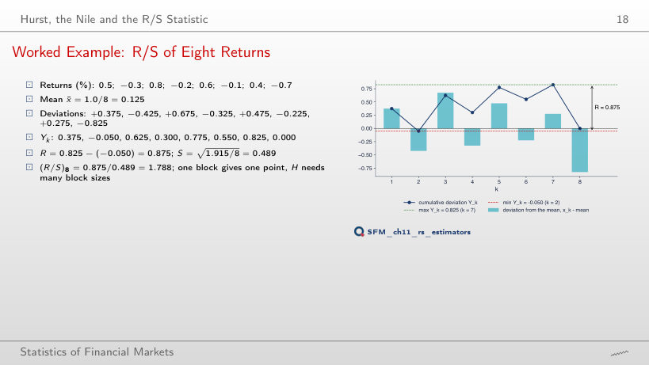
Worked example: R/S of one block
Answer
It is of the same order: 1.530. R and S grow together with volatility, so the ratio has no unit; for 8 values R/S stays between about 1.5 and 2.8 (2.317 in January 2000, 2.774 in October 2008, 2.155 in September 2026). Dividing by S makes the statistic comparable across assets.
From R/S to the Hurst Exponent
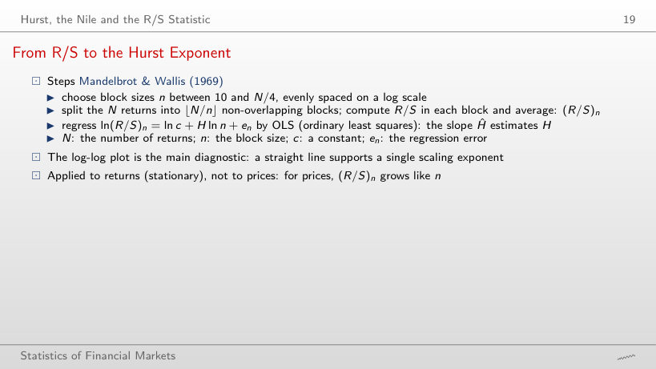
Worked example: the slope of the log-log plot
Answer
About 0.86 (0.861), far above the i.i.d. band [0.51, 0.57]: long memory in volatility. For the returns, 0.530 lies inside the band, because R/S is biased upwards in small samples.
Long Memory: Definitions and Models
Worked Example: How Fast Does Memory Fade?
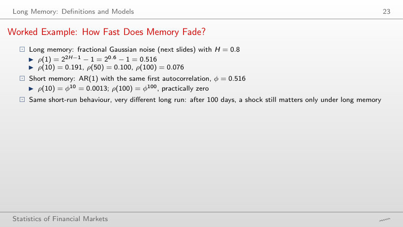
Worked example: fGn against AR(1)
Answer
It rises from about 0.001 (H = 0.55) to about 0.54 (H = 0.95); at H = 0.8 it is 0.076. For large H, ρ(k) decays like k^(2H − 2), that is very slowly. An AR(1) with the same ρ(1) has ρ(100) practically 0 for every H: its decay is geometric.
fBm Paths for Three Hurst Exponents
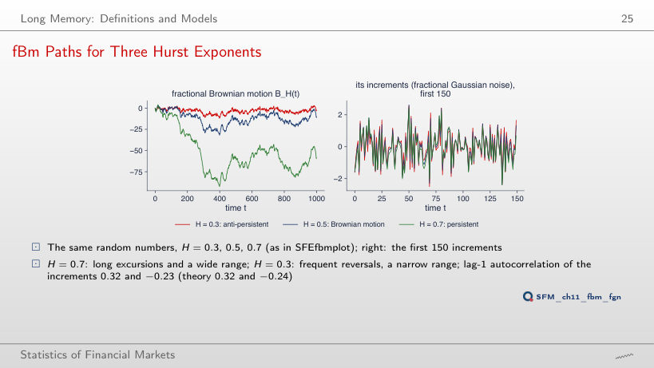
Answer
In theory 2^(2H − 1) − 1 = 2^0.4 − 1 = 0.32; on the 1000 simulated increments, 0.32 (0.316). For H = 0.3: −0.23 in the data, −0.24 in theory. H is neither an autocorrelation nor a probability.
The ACF of Fractional Gaussian Noise
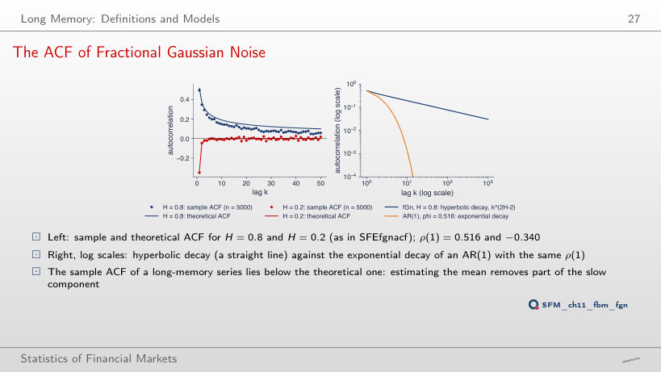
Answer
Estimating the mean removes part of the slow component of the series: with long memory the sample mean follows the long waves, and the deviations from it are less correlated. Over lags 1–50 the sample ACF is on average 0.040 below the theoretical one. The circulant-embedding simulation is exact, and the fGn ACF formula is exact at every lag.
ARFIMA(0,d,0) with d = 0.4 and d = -0.4
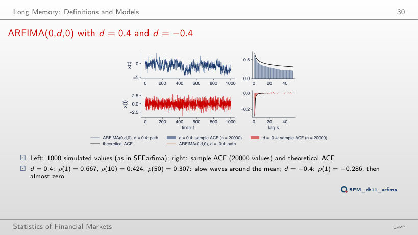
Answer
0.307: the hyperbolic decay keeps much of ρ(1), which is why the series makes slow waves around its mean. An AR(1) with φ = 0.667 would have ρ(50) = 0.667⁵⁰, practically 0. With d = 0.1, ρ(50) is only 0.005.
Worked Example: ARFIMA(0, 0.3, 0)
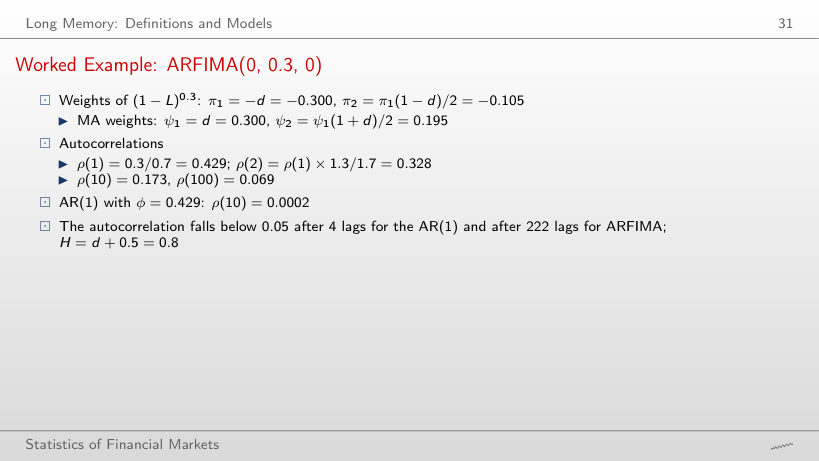
Worked example: weights and autocorrelations of ARFIMA(0,d,0)
Answer
After 222 lags; an AR(1) with the same ρ(1) = 0.429 falls below 0.05 after 4 lags. ρ(k) still goes to 0 (stationarity, d < 0.5), only very slowly: ρ(100) = 0.069.
Estimators of Long Memory
Detrended Fluctuation Analysis (DFA)
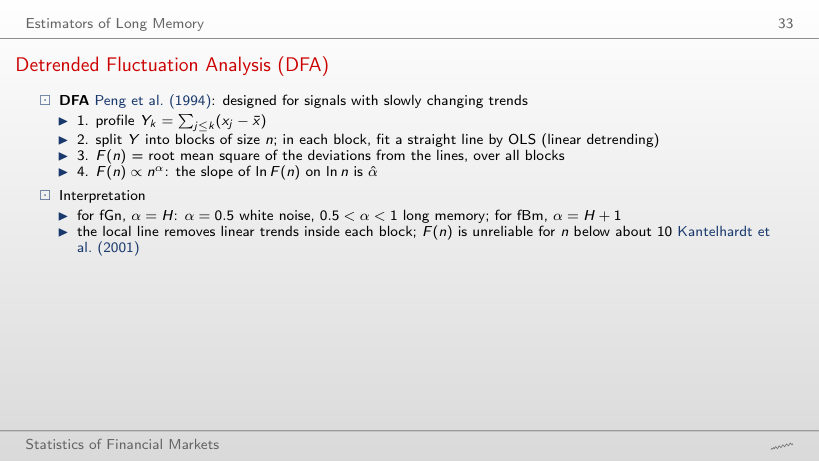
Worked example: the fluctuation F(n)
Answer
It grows about 13 times (from 0.935 to 12.37), close to √(1678/10) = 13.0, because α̂ = 0.49 ≈ 0.5. For |r| it grows about 100 times: α̂ = 0.95. F(n) grows in proportion to n only for a profile with a trend (fBm has α = H + 1).
R/S and DFA: S&P 500 since 2000
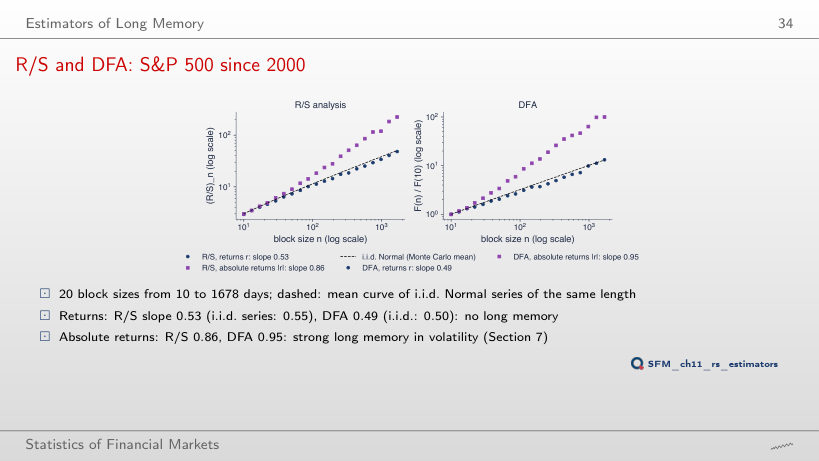
Answer
No: i.i.d. Normal series of the same length give a mean slope of 0.55, because R/S is biased upwards in small samples. DFA gives 0.49, against 0.50 for the i.i.d. series. The absolute returns have R/S 0.86 and DFA 0.95: the long memory is in volatility.
The GPH Log-Periodogram Regression
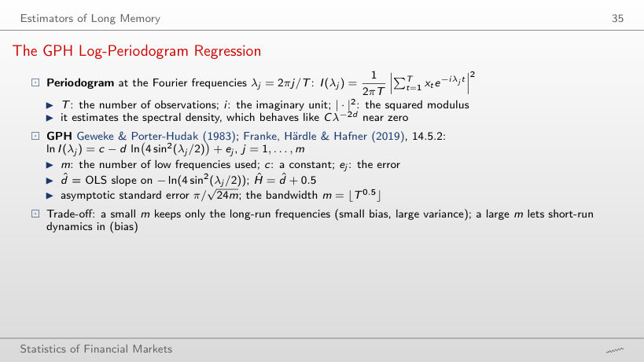
Worked example: the GPH regression
Answer
About 0.28, from −0.103 to 0.176, and it contains 0: the estimate is not separated from 0 by this test. This does not prove d = 0, only that the data are compatible with d = 0. For |r| the interval is [0.33, 0.61].
GPH: S&P 500 Returns and Absolute Returns
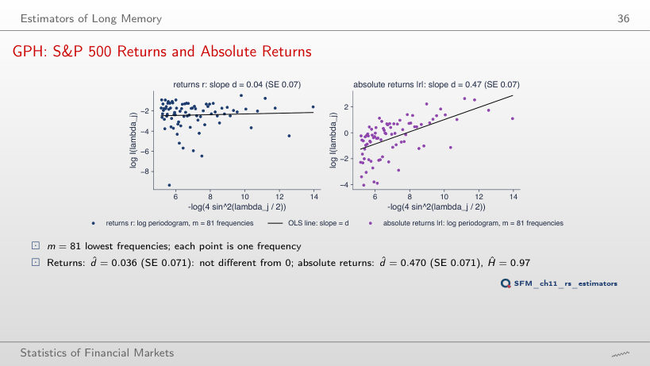
Answer
The SE falls from 0.071 to 0.029 and d̂ rises from 0.470 to 0.554: the higher frequencies bring more information, but also the short-run dynamics of volatility. At m = 33 (T^0.4), d̂ = 0.364 with SE 0.112.
Lo's Modified R/S Test
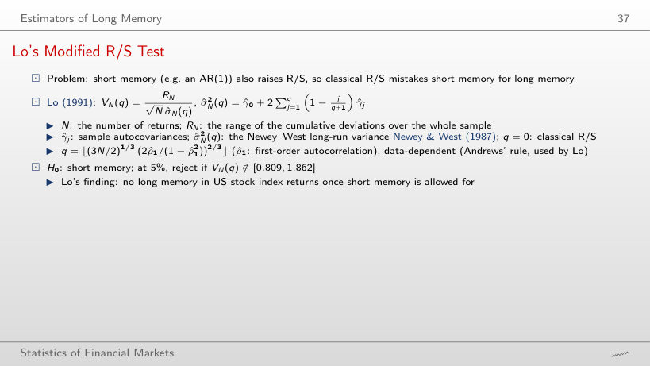
Worked example: the statistic V_N(q)
Lo's test on the six series (at 5%: short memory is rejected outside [0.809, 1.862])
Answer
7: (3N/2)^(1/3) = 21.60 and (2|ρ̂₁|/(1 − ρ̂₁²))^(2/3) = 0.341, product 7.36. The correction depends on the size of ρ̂₁, not on its sign. With q = 7, V = 1.56 lies in [0.809, 1.862]; for |r|, q = 15 and V = 2.66: short memory is rejected.
Classical against Modified R/S: Size and Power
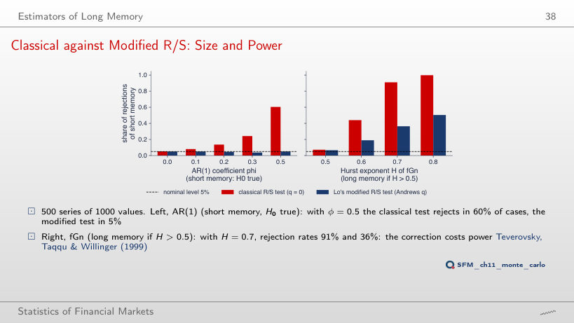
Answer
In 60% of the cases; Lo's modified test in 5%, the nominal level. The classical R/S confuses short memory with long memory. The correction costs power: for fGn with H = 0.7, the rejection rates are 91% (classical) and 36% (modified).
Monte Carlo: Bias and Spread of the Estimators
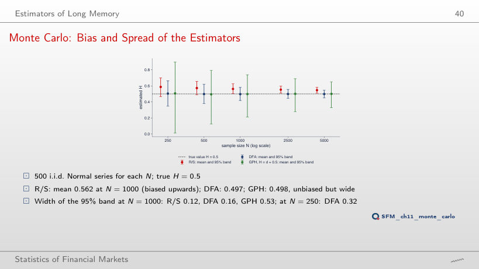
Answer
GPH: width 0.53, against 0.16 for DFA and 0.12 for R/S. GPH is practically unbiased (mean 0.498) but uses only m = 31 frequencies; R/S has the narrowest band, but centred at 0.562, not at 0.5.
S&P 500: All Estimators
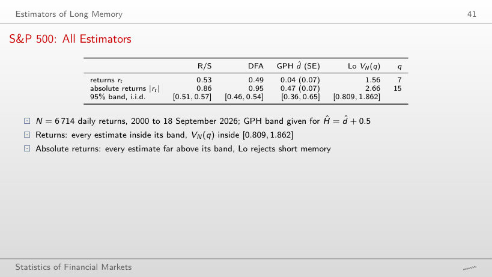
All estimators; the 95% bands come from 500 i.i.d. series of the same length (in red: outside the band)
Answer
R/S, with 0.53: its i.i.d. band for N = 6,714 is [0.51, 0.57], so 0.53 lies inside it. DFA (0.49), GPH (Ĥ = 0.54, d̂ ± 1.96 SE = [−0.10, 0.18]) and Lo's test (V = 1.56) are all compatible with no long memory.
Spurious Long Memory
The Nile: R/S before and after Removing the Break
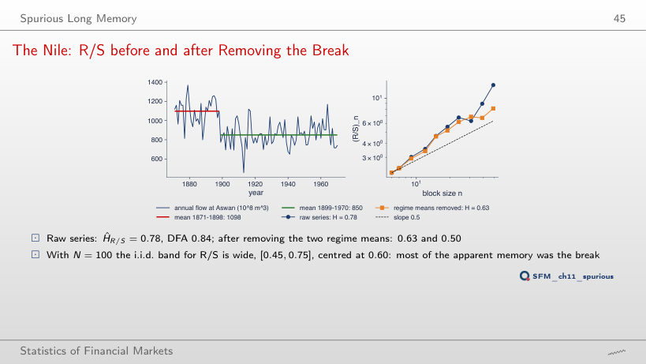
Answer
0.63, inside the i.i.d. band [0.45, 0.75] for N = 100, centred at 0.60; DFA falls from 0.84 to 0.50. Most of the apparent memory was the break, not persistence of the flows.
Simulated Spurious Long Memory
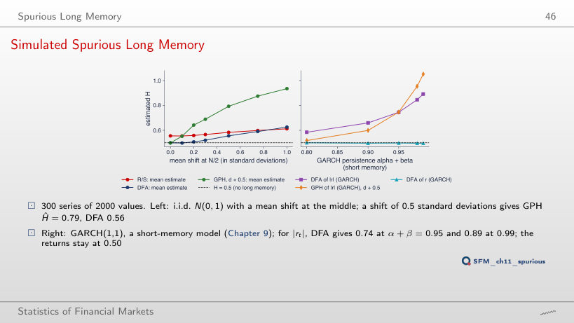
Answer
About 0.79 (DFA 0.56), although the series has no memory at all. The common deviation from the overall mean makes observations of the same regime look correlated at all lags. At N = 4000, GPH still gives 0.79: spurious memory does not go away with more data.
Long Memory in Volatility
S&P 500: the ACF of rₜ, |rₜ| and rₜ²
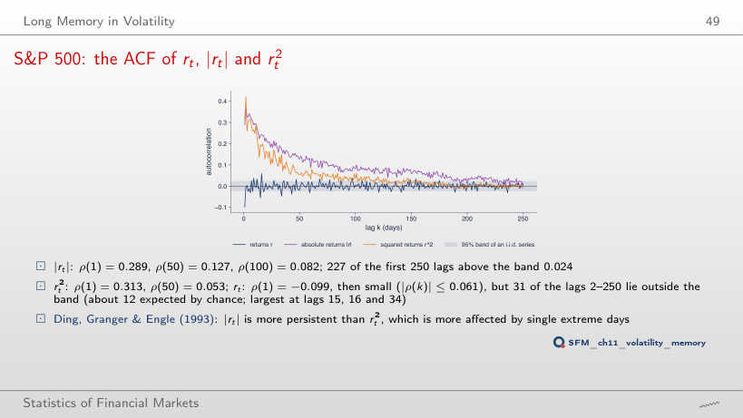
Answer
31, against about 12 expected by chance (5% of 249); the largest at lags 15, 16 and 34, all below 0.061 in absolute value. The 1.96/√n band is an asymptotic reference for an i.i.d. series; with volatility clustering the sample autocorrelations vary more than it shows, so the exceedances do not, by themselves, prove predictability.
Six Markets: Returns and Absolute Returns
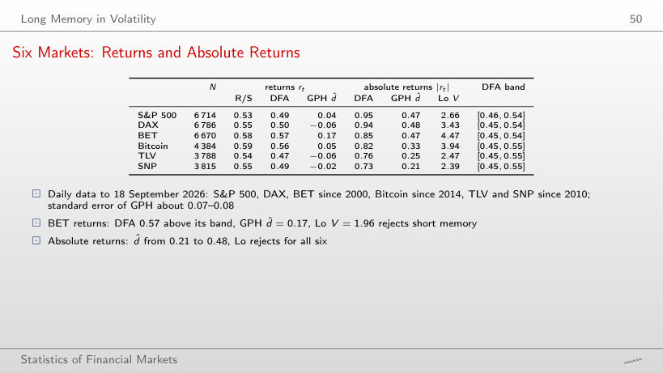
Six markets (in red: DFA above the band, Lo's test rejects short memory)
Answer
Only for the BET: d̂ = 0.17, interval [0.03, 0.31]. Also for the BET, DFA (0.57) is above its band and Lo's test (V = 1.96) rejects short memory. For |r|, d̂ lies between 0.21 and 0.48, and Lo's test rejects for all six series.
Six Markets: DFA Exponents and the Shuffle Test
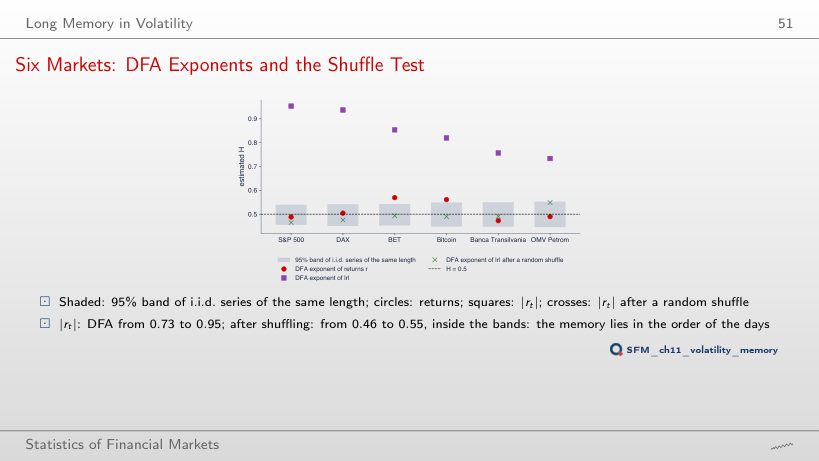
Answer
It falls to between 0.46 and 0.55, inside the i.i.d. bands: the shuffle keeps the distribution (heavy tails included) and destroys only the order of the days. The long memory in volatility lies in the order of the days.
Rolling Hurst Exponents
Rolling DFA Exponents: S&P 500, BET, Bitcoin
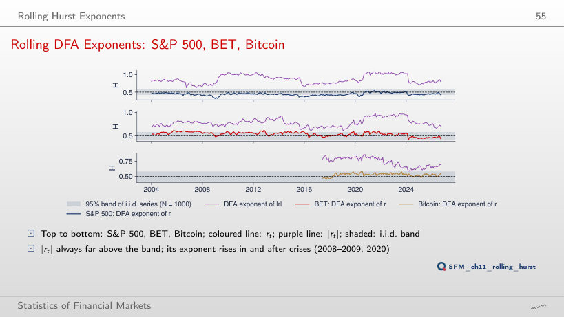
Answer
24%, none above. The minimum, 0.32, is reached on 31 December 2008: daily reversals (anti-persistence) in the panic. Consecutive windows share 979 of their 1000 observations, so 24% does not mean 65 independent results.
Long Memory and Risk
Scaling Risk with h^H
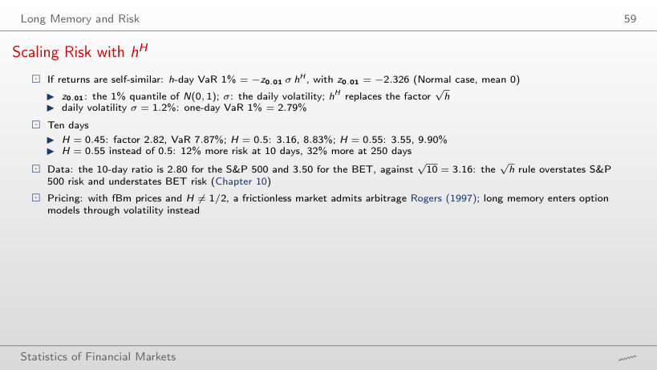
Worked example: VaR 1% over h days
Answer
By about 12%: 9.91% against 8.83%, because 10^0.55/10^0.5 = 10^0.05 = 1.12. At 250 days the difference is 32%. The √h rule overstates the S&P 500 risk (10-day ratio 2.80) and understates the BET risk (3.50).
Daily log returns, in %: S&P 500, DAX and BET from January 2000, Bitcoin from September 2014 (7 days a week), Banca Transilvania (TLV) and OMV Petrom (SNP) from 2010, from the adjusted price, to 18 September 2026; the two erroneous TLV days of May 2016 are removed. EODHD prices. The annual flow of the Nile at Aswan, 1871–1970 (Cobb, 1978; the statsmodels data set). From these data the browser computes the scaling, R/S, DFA, the GPH regression, Lo's test, the ACF and the rolling exponents. The simulated series (fBm, fGn, ARFIMA) and every Monte Carlo estimate (500 i.i.d. series for each N, 500 series for Lo's test, 300 for spurious memory) come from the code of the lecture, with the same seeds; the browser computes the means, bands and rejection rates from them. Other values of H and d, other lengths N, bandwidths, windows and Nile break years, and the i.i.d. curves for the other five series are extra runs of the same code; box counting on the fBm paths is an extra computation that is not in the lecture.